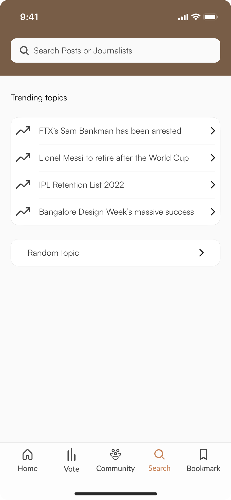
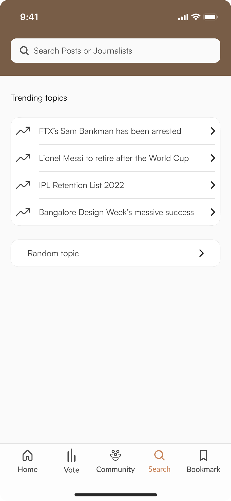

Sage
( overview )
A decentralized news aggregation platform that sources news from various sources. It aims to raise awareness by providing unbiased insights for users to make an informed decision.
( Duration )
20 hours
( Category )
UI/UX CASE STUDY

( The rise of modern news outlets )
The rise of digital media has led to an increase in the use of clickbait headlines and the spread of false or misleading news stories that prioritize attracting clicks and ad revenue over factual reporting. This has distorted the public's understanding of current events and eroded trust in journalism. Many websites exist solely to propagate flimsy and baseless stories, prioritizing clicks and impressions over factual reporting.
Reporters are facing increasing pressure to produce sensationalized content that panders to readers' short attention spans to attract clicks and views. This type of content, which is often exaggerated or sensationalized, performs better than more accurate and thorough reporting. Partisan contributors often share completely fabricated stories from the fringe and alternative news websites, further fueling confirmation bias and political polarization. In some ways, social media is contributing to a decline in the quality of public discourse and political polarization.
( The rise of partisan media )
The rise of online partisan media has had several negative consequences. One of the main consequences is the spread of false or misleading information, which can distort the public's understanding of current events. This can lead to political polarization, as people are exposed only to information that confirms their existing beliefs. Additionally, the pressure to produce sensationalized content that attracts clicks and views can lead to a decline in the quality of journalism and a lack of trust in the media. The use of algorithms to determine which posts users see can also create "filter bubbles" where people are only exposed to certain types of information, further contributing to political polarization.
Facebook's news feed algorithm has the power to manipulate which posts users see by determining their visibility and order. The algorithm tries to choose posts that users are likely to engage with to keep them on the platform.
( Using the How Might I tool )

( notable features)
My final idea is a self-funded news platform that serves the youth by aggregating news from various sources. The platform is community-driven with members voting on what they want topic is of interest to them to know more about see using polls. In a world where news is published to create a sensation, this platform aims to raise awareness by providing balanced, actionable insights that are relevant to the intended demographic. The AI-powered algorithm examines all news, collates it, and categorizes it to ensure that both sides of the story are presented, allowing users to make informed decisions. This platform offers the news behind the news, providing perspective and knowledge.
One way to make reading more engaging and easier to comprehend is by using a non-linear approach, which allows for greater flexibility in navigating complex information. This method of reading can be particularly useful when skimming through articles, as it allows the reader to focus on the most important points rather than being tied to a linear progression. This can be especially useful when consuming news or social media, where the abundance of information can be overwhelming. By using a non-linear approach, readers can break up the monotony and more effectively process the information being presented.
( Empathy mapping )

( Systems map )

( Information architecture )


 
